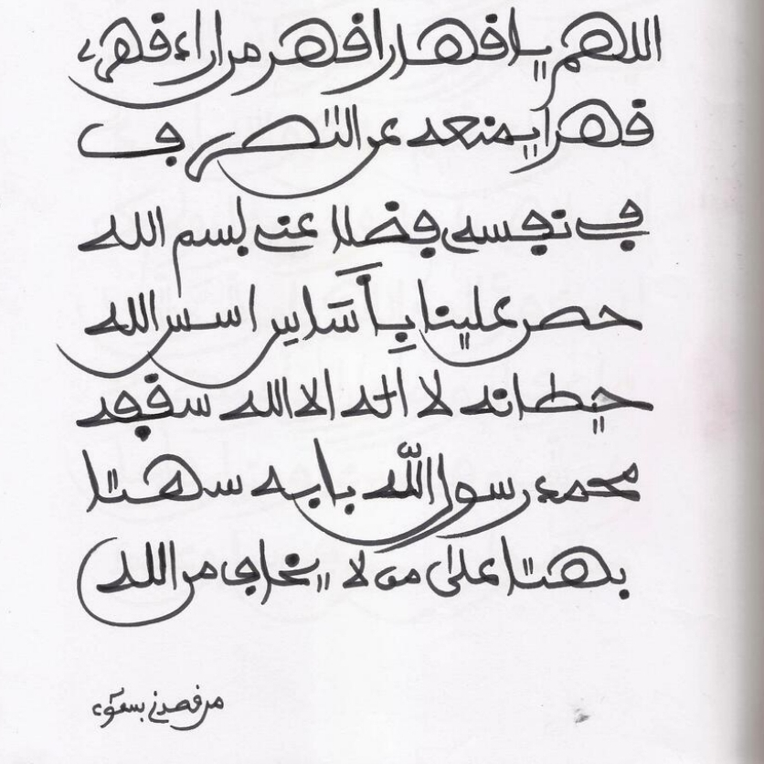
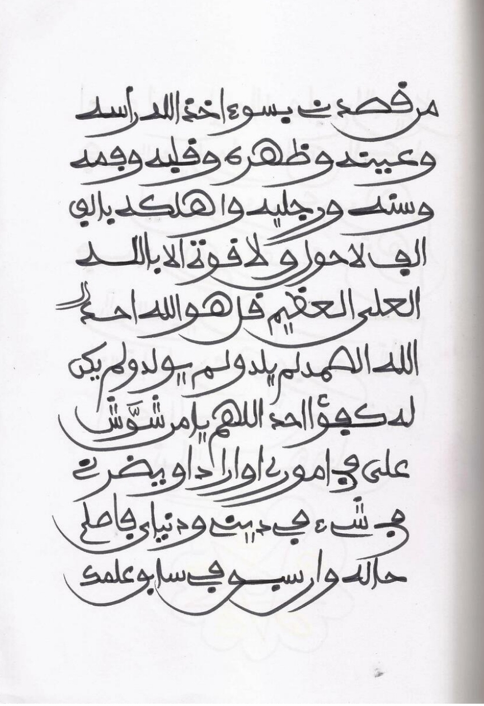
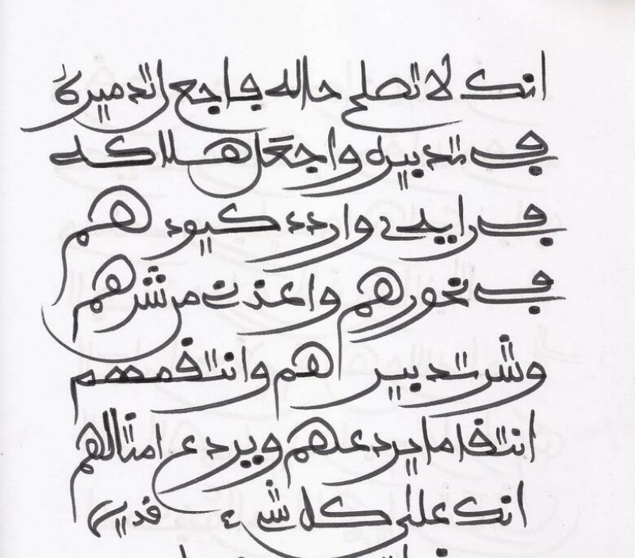

Ba a cika fitar da irin wannan sirrin ba saboda karfin shi da kuma girman shi, wallahi wallahi idan mutum ya rike wannan sirrin babushi babu wulakanta a idon makiya kuma a gaban idon shi zai dinga ganin yadda Allah Zaike kashe makiyanshi cikin kankanin lokaci. shima wannan sirrin na sameshi ne daga Mallam Adamu Ana karanta Ya Qahharu kafa 1000 sai wannan Addu'ar kafa 7



Indai zaka dinga karanta wannan sirrin full dinshi wallahi zaka sha mamaki ga wayanda bazasu iya karantawa ba, zasu iya sauraran Audio ta nan Adduar Hisbul Bahar (Zuwa yanzu bamu daura audio ba amma an jima ko gobe in Allah ya kaimu Zamu daura)
By Muawiya Muzzy | 25 Feb 2025
All Right Reserved